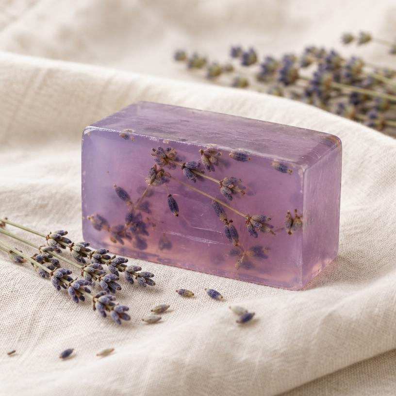
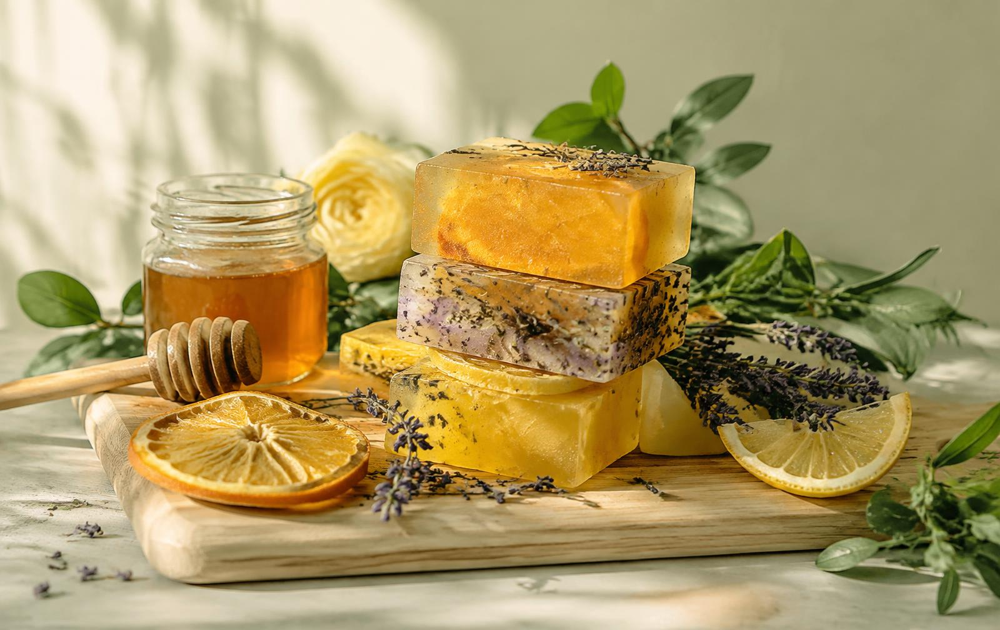
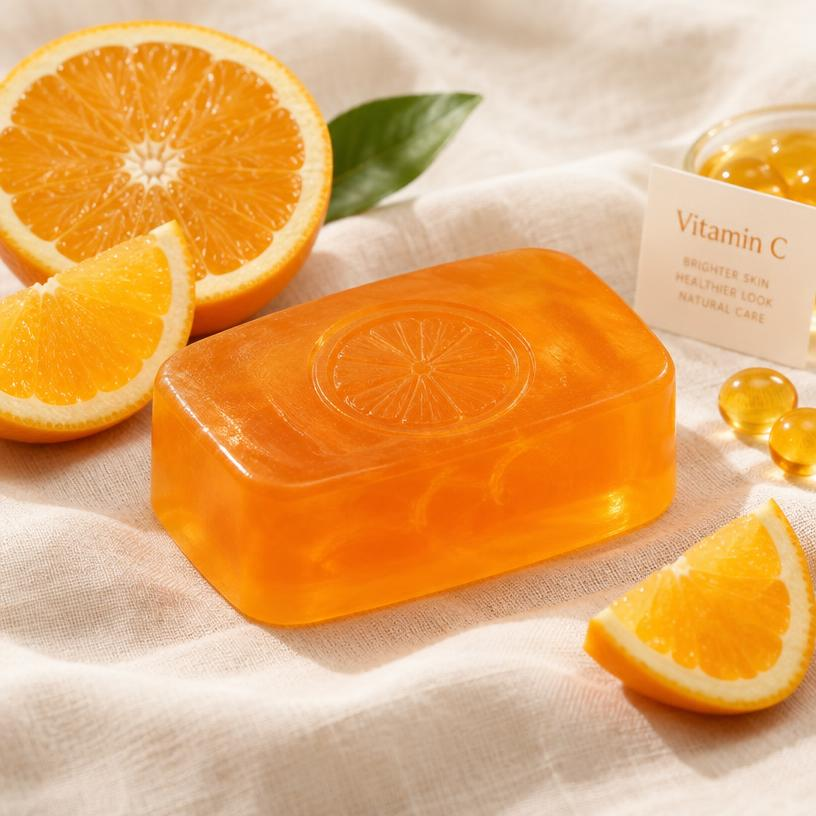
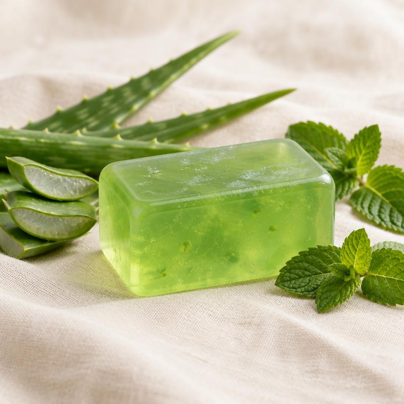
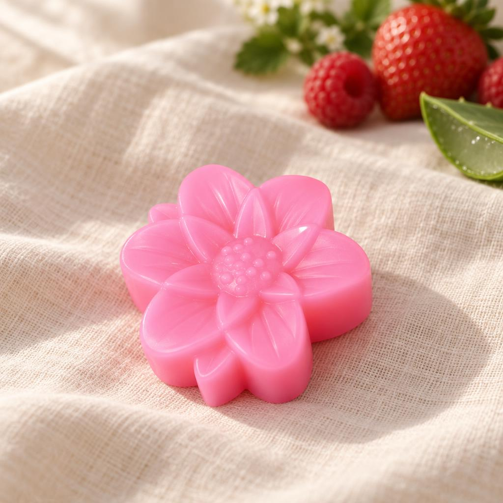
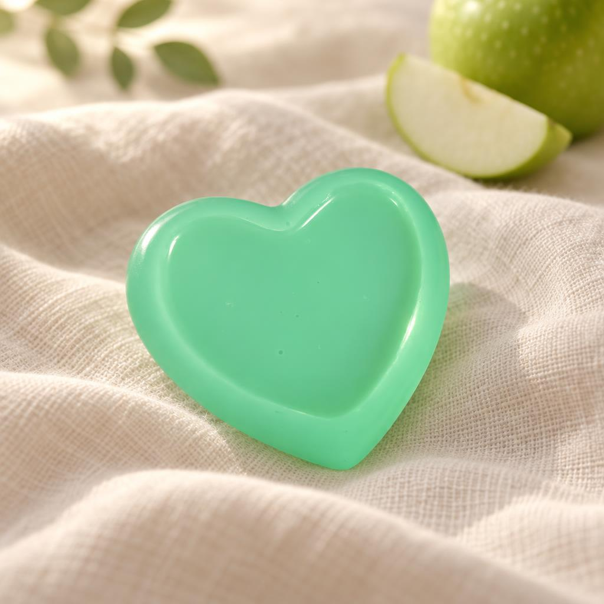
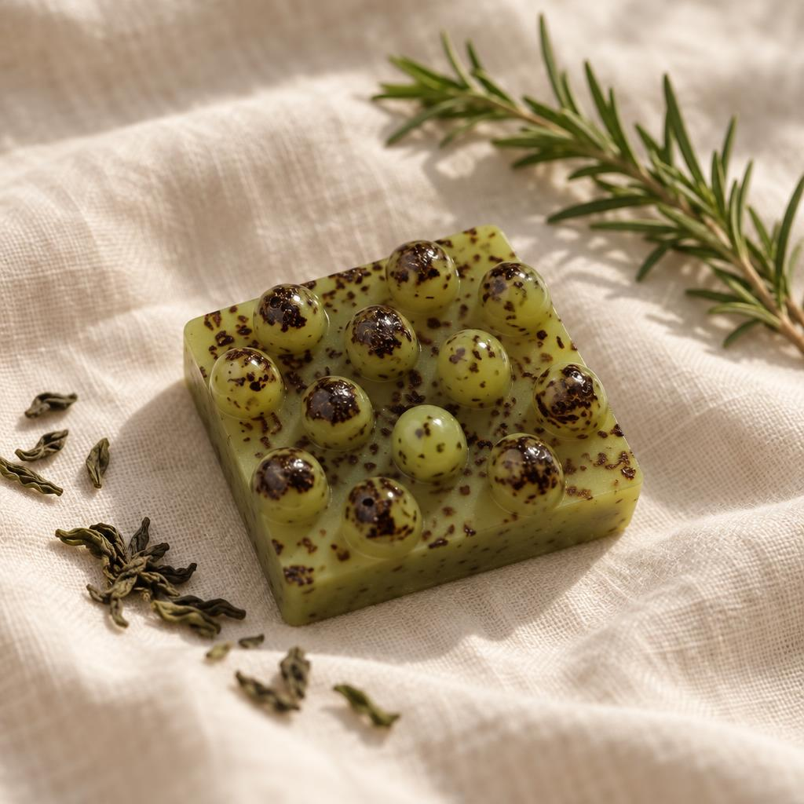
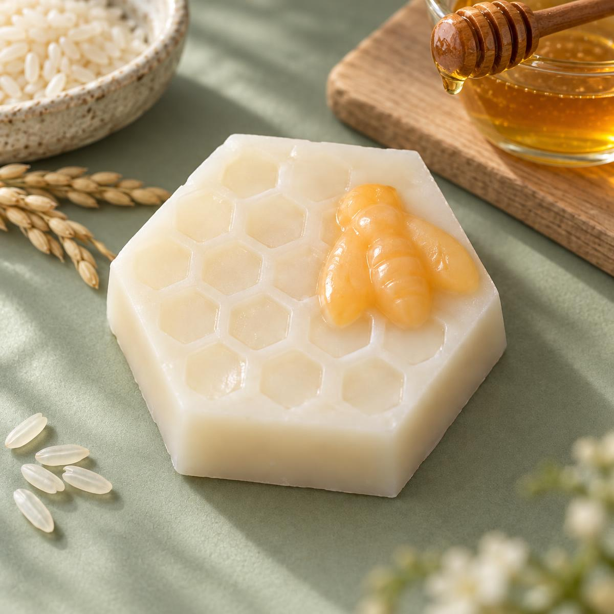
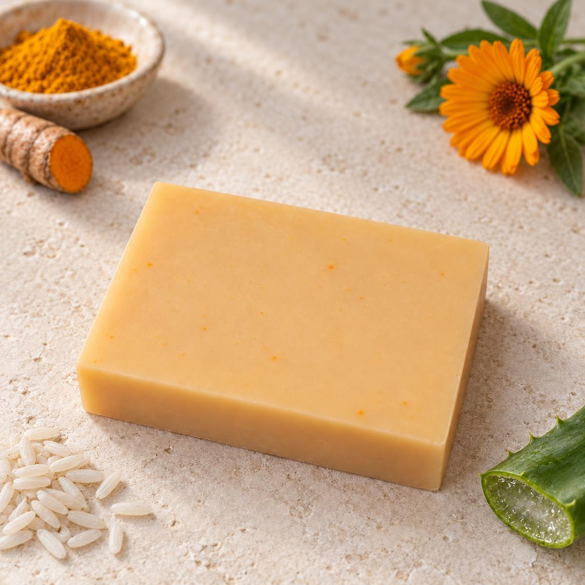

Lavanda Relajante
$15.000Glicerina, vitamina E y esencia de lavanda. Relaja y suaviza.
Pedir por WhatsAppNaturaleza pura y textura artesanal hecha con el corazón
Jabones caseros de glicerina con vitaminas y esencias que dejan tu piel suave, hidratada y perfumada.
Comprar ahora
C y E para nutrir tu piel
Aromas naturales que duran
Pequeños lotes, con amor

Glicerina, vitamina E y esencia de lavanda. Relaja y suaviza.
Pedir por WhatsApp
Glicerina, vitamina C y esencia de naranja. Ilumina y revitaliza.
Pedir por WhatsApp
Glicerina, aloe vera, eucalipto y menta. Refresca e hidrata.
Pedir por WhatsApp
Glicerina, aloe vera y esencia de frutos rojos. Hidrata y revitaliza.
Pedir por WhatsApp
Glicerina, colágeno y esencia de manzana verde. Humecta y suaviza.
Pedir por WhatsApp
Glicerina, té verde, romero y vitamina E. Antioxidante y regenerador.
Pedir por WhatsApp

Glicerina, cúrcuma, arroz, aloe y caléndula. Despigmenta y limpia.
Pedir por WhatsAppTu opinión nos ayuda a crecer. Cuéntanos qué te gustó, qué podemos mejorar o qué aroma te gustaría encontrar.
Dejar una sugerencia por WhatsApp